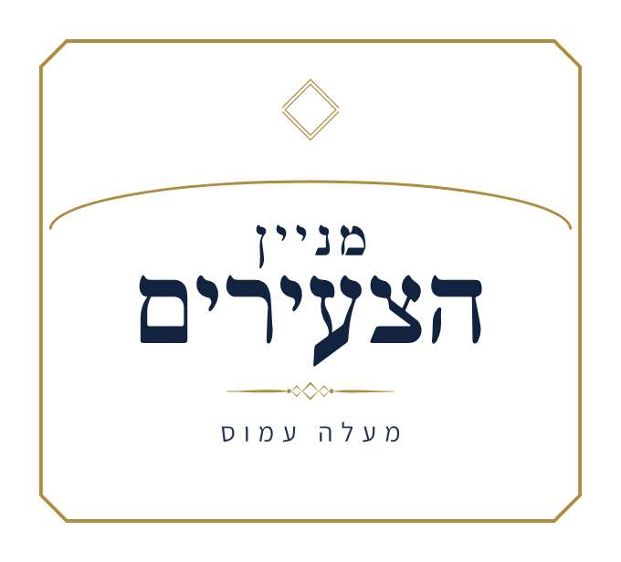

הודעה מהגבאים
לוח הקהילה
כל החדשות ←
היום
טוען…
ש״ס שוטנשטיין · הזדרזו
נותרו 3 כרכים אחרונים
ברוך השם נמכרו כמעט כל כרכי הש״ס שנקנה לבית הכנסת.
שלושה כרכים אחרונים ממתינים למי שיזדרז.
3
כרכים אחרונים
לטבלת הכרכים ←
זמני היום
זמני היום ההלכתיים
מחושבים לפי מיקומה של מעלה עמוס, בגובה פני הים. שעה זמנית לפי הגר״א — שנים־עשר חלקים שווים בין הנץ לשקיעה.
לוח יומי
תפילות ושיעורים
השעות קבועות כל השנה. בימי הסליחות המניין מקדים.
שבת קודש
זמני השבת
הזמנים מחושבים לפי מיקומה של מעלה עמוס. השקיעה מוצגת כדי שאפשר יהיה לאמת כל שורה.
השבתות הקרובות
| פרשה | תאריך | הדלקת נרות | שקיעה | צאת השבת |
|---|---|---|---|---|
| טוען… | ||||
מרגיש חלק?
בוא תהיה שותף!
המניין מוחזק מכיסם של אנשים פרטיים. אין תקציב חיצוני, אין גוף שמאחורינו — יש שותפים.
מה קורה עכשיו
לקחת חלק
שני דברים פתוחים כרגע לכל מי שרוצה להיות שותף.
73 כרכים
ש״ס שוטנשטיין לבית הכנסת
טבלת הכרכים המלאה, לפי סדרים — עם חיפוש, סימון מה נלקח,
ודף רישום להדפסה.
לטבלת הכרכים ←
ערב אחד בחודש
כיבוד ללומדי חלקי בקהילתי
עשרים לומדים כל ערב בבית המדרש. עוגה, סלט או פירות —
ולוקחים חלק.
ללוח הערבים ←
הוראת קבע בנקאית
לתמוך בלי לחשוב על זה כל חודש
בלי עמלת סליקה ובלי כרטיס אשראי שפג תוקפו. הנחיות,
טופס למילוי דיגיטלי, והמסמכים המקוריים.
להקמת הוראת קבע ←
מרכז הגמ"חים של מעלה עמוס
מאגר יישובי אחד לכל הגמ"חים שביישוב. לחפש גמ"ח, להוסיף את הגמ"ח שלכם, ולעדכן פרטים.